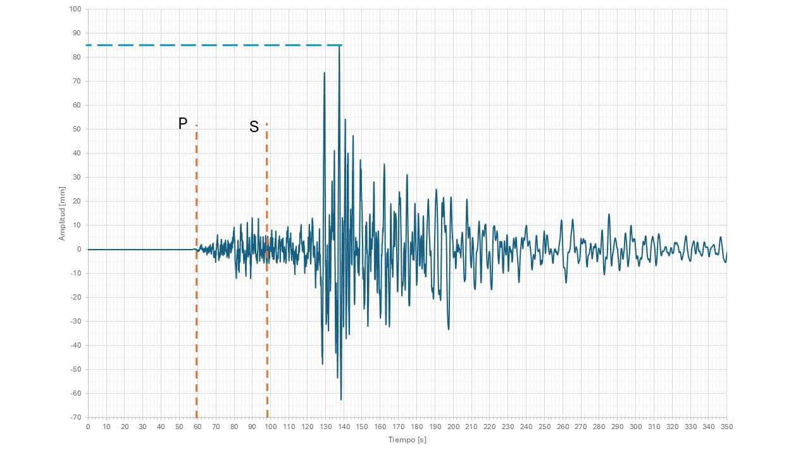
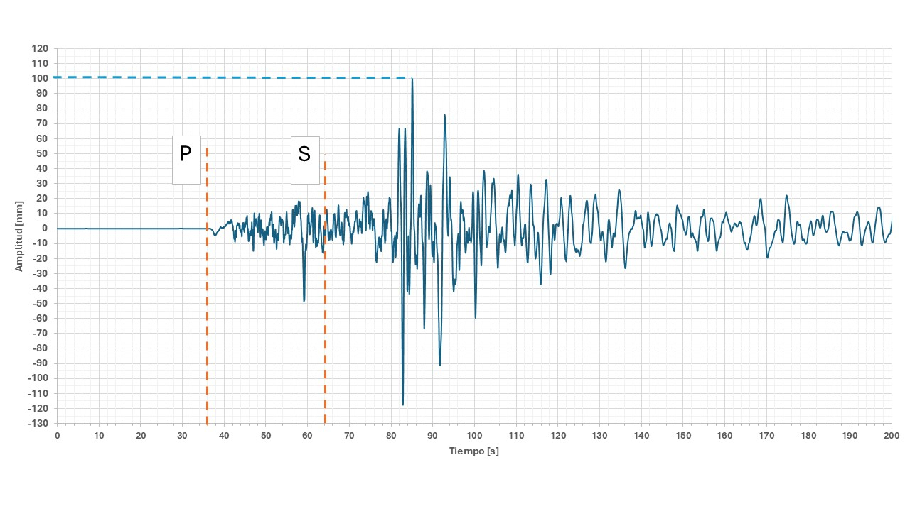
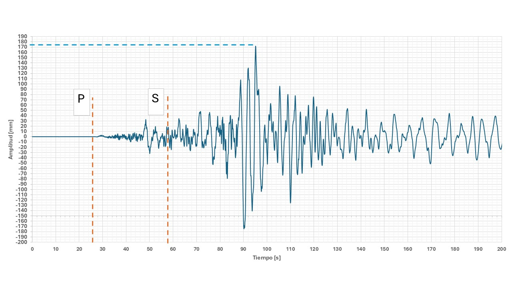

Esta herramienta permite localizar un sismo usando el método clásico de triangulación, basado en la diferencia de tiempos entre el arribo de la onda P y la onda S. Para cada estación, debes leer en el sismograma los instantes en que llega la onda P y la onda S. La diferencia (S − P) se relaciona con la distancia aproximada al epicentro usando una velocidad promedio. La intersección de los círculos define la zona posible del epicentro.
La intersección de las circunferencias aproxima la localización del epicentro. Haz clic en el mapa para marcar manualmente ese punto.
Toca la imagen para hacer zoom.


